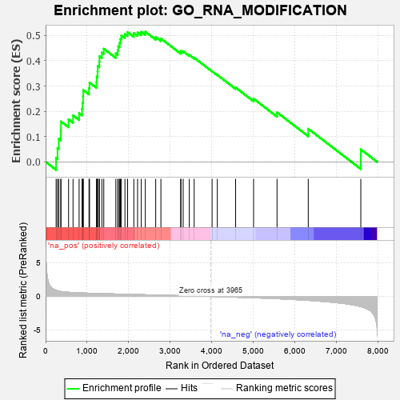
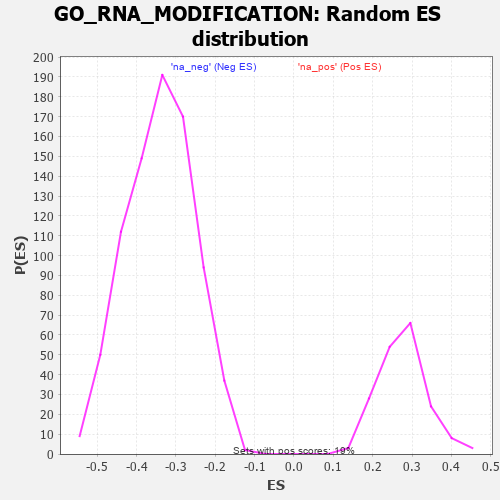

| | | Dataset | 7d |
| Phenotype | NoPhenotypeAvailable |
| Upregulated in class | na_pos |
| GeneSet | GO_RNA_MODIFICATION |
| Enrichment Score (ES) | 0.51482415 |
| Normalized Enrichment Score (NES) | 1.8653833 |
| Nominal p-value | 0.0 |
| FDR q-value | 0.10505235 |
| FWER p-Value | 0.697 |
Table: GSEA Results Summary

Fig 1: Enrichment plot: GO_RNA_MODIFICATION
Profile of the Running ES Score & Positions of GeneSet Members on the Rank Ordered List
| PROBE | GENE SYMBOL | GENE_TITLE | RANK IN GENE LIST | RANK METRIC SCORE | RUNNING ES | CORE ENRICHMENT | | 1 | THADA | | | 253 | 0.931 | 0.0156 | Yes |
| 2 | DPH3 | | | 287 | 0.844 | 0.0545 | Yes |
| 3 | QTRT2 | | | 316 | 0.792 | 0.0914 | Yes |
| 4 | ELP4 | | | 365 | 0.734 | 0.1228 | Yes |
| 5 | LARP7 | | | 369 | 0.731 | 0.1598 | Yes |
| 6 | JMJD6 | | | 553 | 0.613 | 0.1680 | Yes |
| 7 | PARN | | | 660 | 0.572 | 0.1838 | Yes |
| 8 | GAR1 | | | 806 | 0.530 | 0.1926 | Yes |
| 9 | CMTR1 | | | 877 | 0.511 | 0.2098 | Yes |
| 10 | ADAT3 | | | 890 | 0.508 | 0.2342 | Yes |
| 11 | NSUN2 | | | 901 | 0.506 | 0.2587 | Yes |
| 12 | NHP2 | | | 906 | 0.505 | 0.2840 | Yes |
| 13 | CTU2 | | | 1044 | 0.475 | 0.2910 | Yes |
| 14 | RBM15 | | | 1057 | 0.473 | 0.3136 | Yes |
| 15 | ELP3 | | | 1223 | 0.442 | 0.3154 | Yes |
| 16 | NSUN5 | | | 1230 | 0.442 | 0.3371 | Yes |
| 17 | PUS10 | | | 1249 | 0.438 | 0.3572 | Yes |
| 18 | DUS4L | | | 1254 | 0.438 | 0.3791 | Yes |
| 19 | DKC1 | | | 1292 | 0.431 | 0.3964 | Yes |
| 20 | TPRKB | | | 1296 | 0.430 | 0.4180 | Yes |
| 21 | DTWD2 | | | 1354 | 0.418 | 0.4321 | Yes |
| 22 | WDR4 | | | 1399 | 0.410 | 0.4475 | Yes |
| 23 | MRM2 | | | 1689 | 0.358 | 0.4293 | Yes |
| 24 | ELP1 | | | 1736 | 0.348 | 0.4413 | Yes |
| 25 | KTI12 | | | 1749 | 0.345 | 0.4574 | Yes |
| 26 | URM1 | | | 1781 | 0.340 | 0.4708 | Yes |
| 27 | DTWD1 | | | 1799 | 0.337 | 0.4859 | Yes |
| 28 | CTU1 | | | 1822 | 0.333 | 0.5002 | Yes |
| 29 | TRUB2 | | | 1908 | 0.319 | 0.5057 | Yes |
| 30 | PUS3 | | | 1972 | 0.309 | 0.5136 | Yes |
| 31 | DUS1L | | | 2122 | 0.288 | 0.5094 | Yes |
| 32 | TFB1M | | | 2212 | 0.275 | 0.5122 | Yes |
| 33 | NSUN4 | | | 2301 | 0.260 | 0.5144 | Yes |
| 34 | TYW1 | | | 2398 | 0.246 | 0.5148 | Yes |
| 35 | NOP2 | | | 2648 | 0.206 | 0.4939 | No |
| 36 | ELP2 | | | 2773 | 0.187 | 0.4878 | No |
| 37 | MRM1 | | | 3250 | 0.114 | 0.4335 | No |
| 38 | PUS7 | | | 3254 | 0.113 | 0.4389 | No |
| 39 | TYW5 | | | 3309 | 0.104 | 0.4374 | No |
| 40 | TGS1 | | | 3456 | 0.084 | 0.4233 | No |
| 41 | NOP10 | | | 3573 | 0.064 | 0.4119 | No |
| 42 | PCIF1 | | | 4004 | -0.009 | 0.3581 | No |
| 43 | TYW3 | | | 4130 | -0.029 | 0.3438 | No |
| 44 | DUS3L | | | 4570 | -0.109 | 0.2940 | No |
| 45 | A1CF | | | 5002 | -0.198 | 0.2497 | No |
| 46 | OSGEP | | | 5566 | -0.337 | 0.1958 | No |
| 47 | ADAT2 | | | 6317 | -0.582 | 0.1309 | No |
| 48 | MOCS3 | | | 7581 | -1.523 | 0.0492 | No |
Table: GSEA details [plain text format]

Fig 2: GO_RNA_MODIFICATION: Random ES distribution
Gene set null distribution of ES for GO_RNA_MODIFICATION